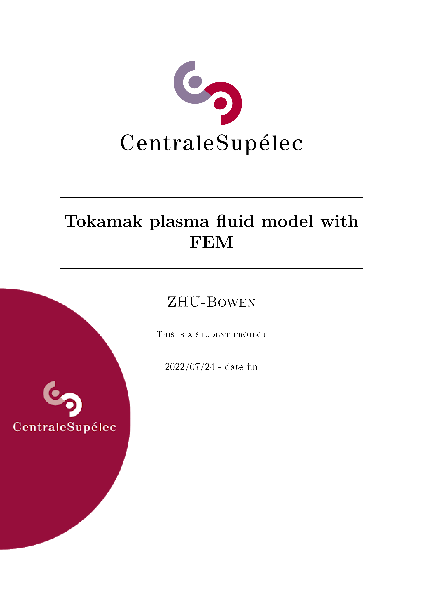
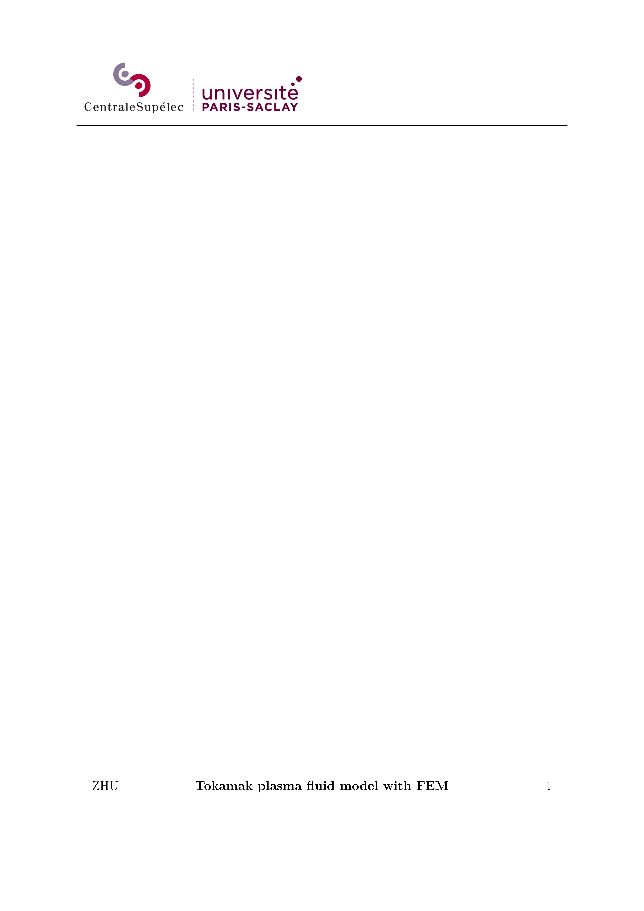
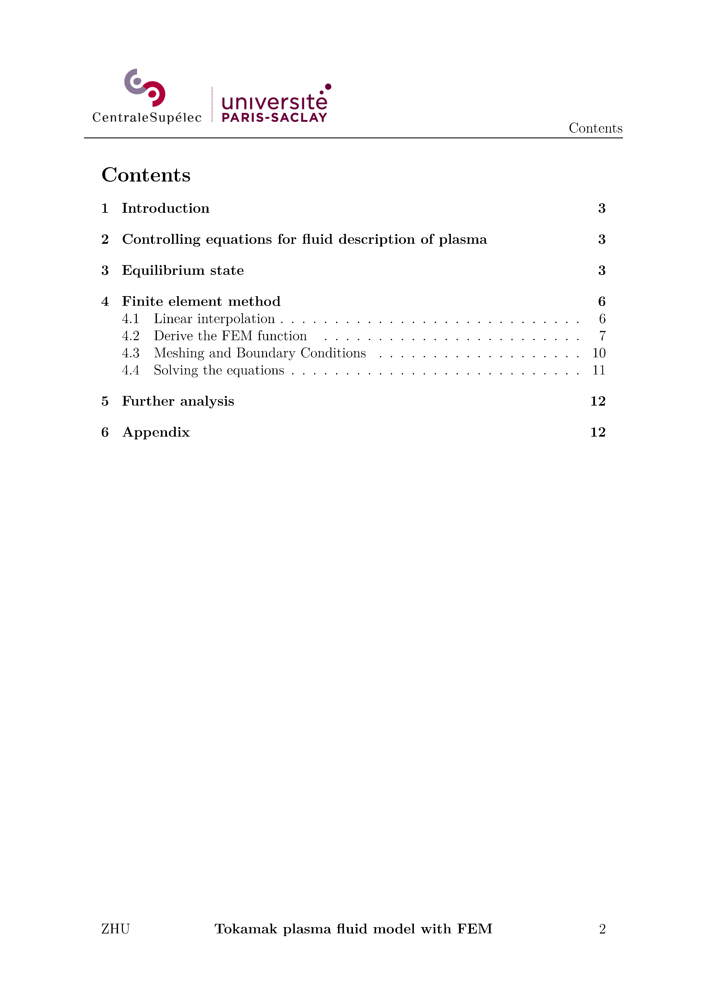
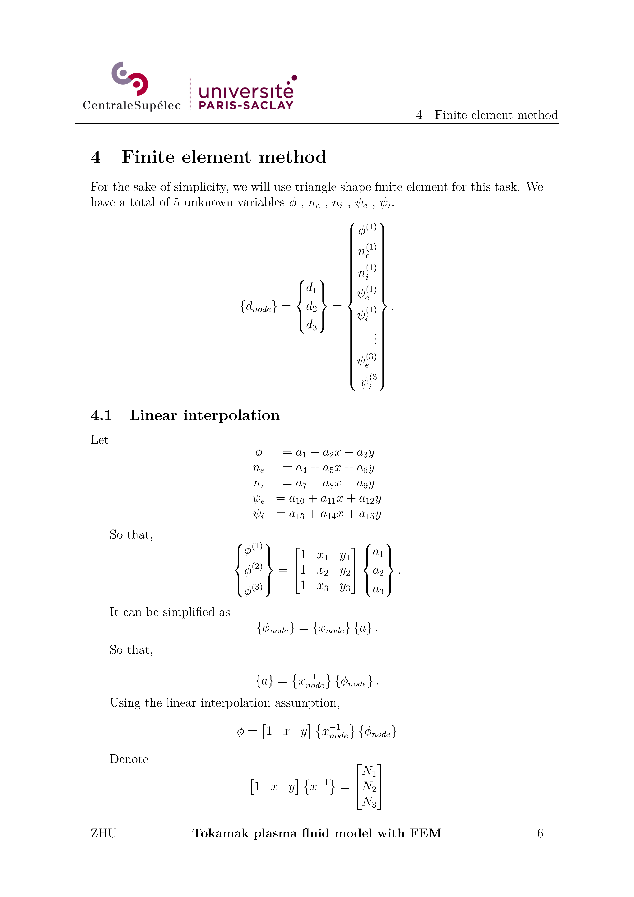
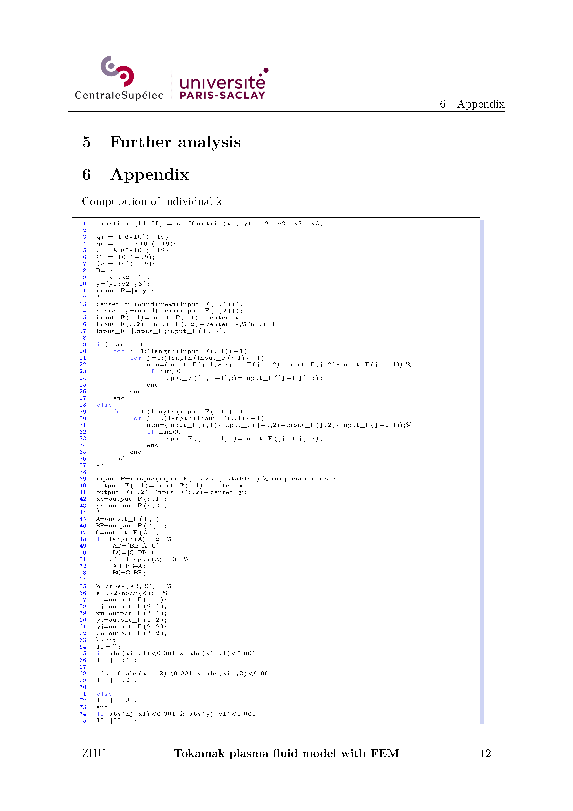
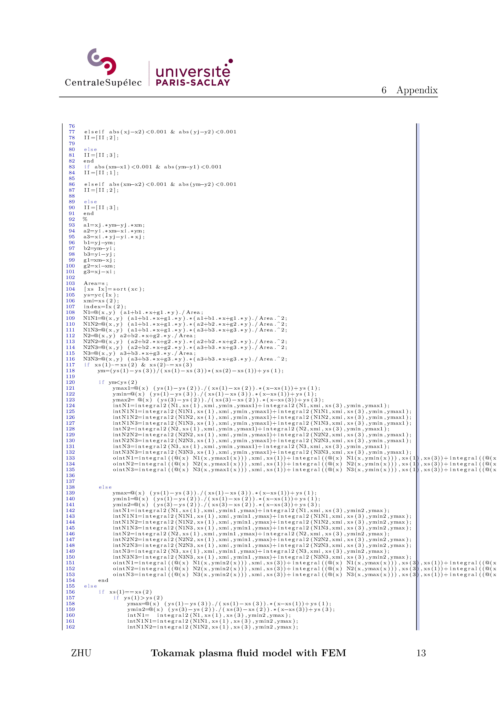
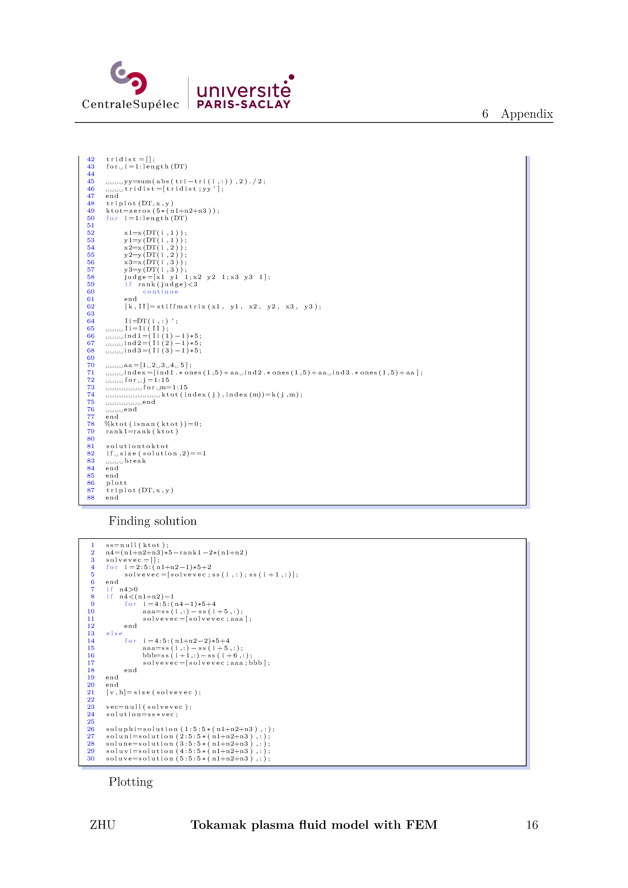
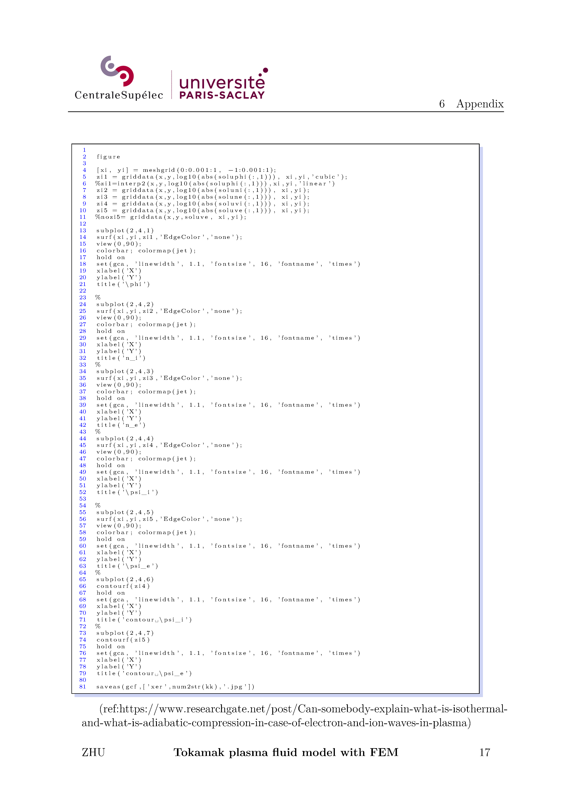

Will be updated soon!
update 17/12/2022. As I study more and more about FEM and numerical method, I find some of the implementation seems silly. But I still glad that I have written something, in a way it is a mirror that can provide a reflection about why we need this or that method--to avoid naive implementation as I did in this project.













